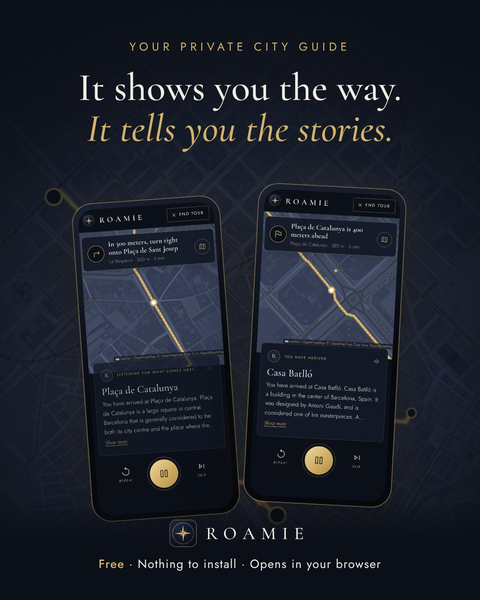
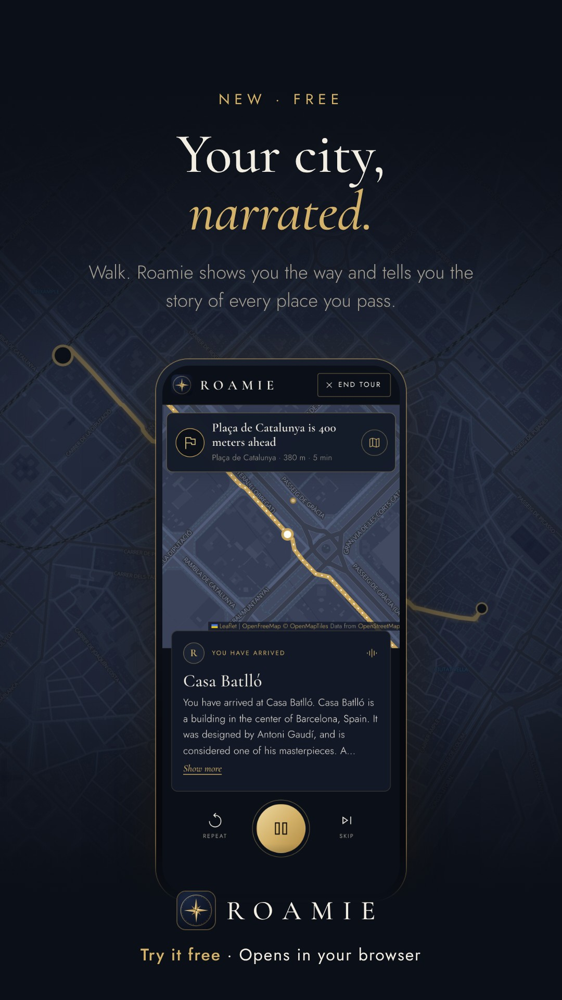
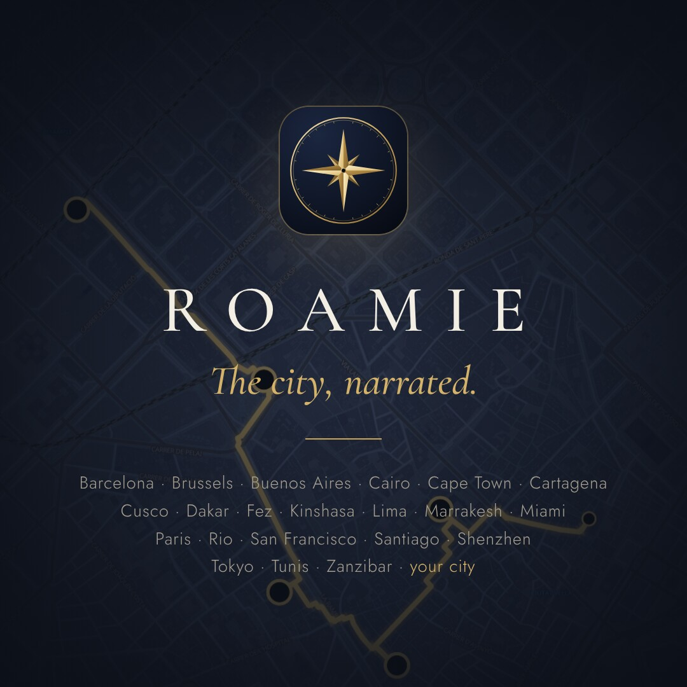
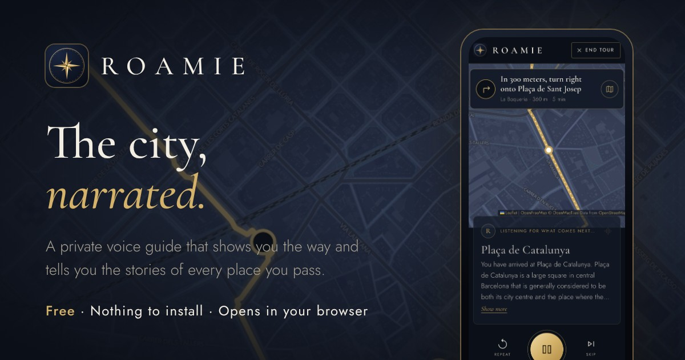

Everything for launch day, ready to use: where Roamie is announced, what each post says, the cards for reception desks and the plan hour by hour. The launch is free: no money on ads. Updated 2 November 2026.
Live: dv2788.github.io/Tour-guide-App-21 cities · 21 tour pages liveSecurity tested · 8.5/10Free launch · Tuesday 1 December
The plan
A free launch on Tuesday 1 December. No money on ads: launch posts (Product Hunt, Hacker News, Reddit, LinkedIn, X, Instagram, TikTok), the 21 tour pages on Google, short city clips, and QR cards at reception desks. Tuesday 1 December falls after US Thanksgiving week and before the Christmas-market and southern-summer peak.
Two cities lead: Barcelona and Marrakesh in December; the festival cities follow from January (Cape Town, Buenos Aires, Rio’s Carnival, Chinese New Year).
Before launch day: the name check (“Roamie” in TMview and the USPTO, 15 minutes); the heyroamie.com address, so every post and card carries the final link (about €11 a year, the only cost; steps in docs/domain.md, the switch is one step on my side); the accounts you post from; one real walk with your phone.
Optional: visit counting with GoatCounter (free, no cookies, no personal data) shows which post and which city bring people to a tour.
Ready now: the app, live and tested in a real browser · 21 tour pages · the security test (fixes live) · all copy below with real links · the launch film and visuals (all 21 cities) · printable QR cards for 21 cities · Roamie Plus built and switched off (it comes after the launch).
Launch day
Tuesday 1 December, hour by hour
Times in Paris time (CET). Everything is in Copy, ready to paste. The rule for the whole day: answer every comment within the hour.
Mon 30 Nov
The evening before
ClaudeFull test run and a live check of the site (tour, camera, voices, offline); a short report to you.
YouSchedule the Product Hunt launch for 1 December (gallery: the four visuals and the film); write your own first comment from the template.
09:01
Product Hunt goes live
You(00:01 in San Francisco.) Post the maker comment. Share the Product Hunt link with 20 friends who travel, asking for honest feedback, not upvotes.
09:30
LinkedIn and X
YouThe launch post with the film; the X post with the link-preview visual.
11:00
Instagram and TikTok
YouThe launch film as a Reel (story visual in Stories); the same film on TikTok with its caption.
15:00
Show HN
You(09:00 in New York.) Post it, then stay for two hours: Hacker News readers ask technical questions, and quick, plain answers matter more than the post.
17:00
Reddit
Your/SideProject, then r/openstreetmap the next day (one community a day; both welcome makers).
21:00
First look
ClaudeErrors, the free services’ load, and (if counting is on) visits and tours started, by source. Fixes the same night if something breaks.
Strategy
Be there when someone is about to walk the city
Roamie is free, opens in a browser and covers 21 cities with ready-made walks. The cheapest person to win is the one already searching for a walking tour of one of those cities, or already standing in its old town.
1 · Intent
Be found on Google
Each city has a free tour page (“Free audio walking tour of Marrakesh”) that answers searches like “walking tour Marrakesh” or “Barcelona audio guide”, for free. People who search for a tour want a tour.
2 · Season
Follow the sun and the festivals
Posts and clips follow each city’s high season and festival weeks. This winter that means winter sun: Marrakesh and Cairo, and southern summer in Cape Town, Buenos Aires and Rio.
3 · Organic reach
Reach for free
Launch day, short city clips, creators and riad/hostel cards bring people at no cost. More of whatever brings people to a tour, less of what doesn’t.
What changed since the first kit (31 October)
A free launch. No money on ads: posts, Google, clips, creators and cards.
All 21 tour pages are live and listed in the sitemap: each city has its page for Google and for the ads.
Sample tours no longer use the free map search (stop positions are stored in the app): launch traffic barely touches it.
Security tested with booby-trapped data, crafted links and framing attacks; every hole found is fixed and live.
Roamie Plus is built and switched off. Paying comes after the launch, the domain move and a routing service that allows paid apps; at launch, Roamie is entirely free.
Meta can no longer show ads only to visitors (“people travelling in this location” is gone), another reason to stay with free posts there.
For
Independent travellers on city breaks (25–45, couples and solo) who skip group tours but want the stories. This winter: Europeans and North Americans on winter-sun trips, and visitors in southern summer.
The promise
Tell Roamie where you are, what you’d like to see (history, culture, landscapes, food) and how long you have. It proposes itineraries (a city walk, a hike, a bike ride, a scenic drive) with the right time at each place, shows you the way (on the map or in first person, through the streets in 3D) and tells the story of the places you pass. Point your camera at a building and it tells you what it is. It also tells you what’s on in town: Carnival, Christmas markets, New Year.
Versus paid apps
VoiceMap sells single tours for about $4–20 each; GPSmyCity charges for its voice directions and per-city guides ($4.99 for Barcelona). Roamie is free, needs no install and plans a walk in any city, not only the ones with a written tour.
Price
Free at launch. No account, no ads in the app, nothing to install. Later, Roamie Plus (€9.99 once) opens every city and every voice; the first city stays free, so don’t promise “free forever”.
Avoid saying
“AI-written stories” (they come from Wikipedia), “works offline”, “nothing leaves your phone”, “the best tour guide app”, and “no tracking” once visits are counted (say “no cookies, no account” instead). In Muslim cities during Ramadan, keep the copy factual, not festive.
Where the ads run
Two cities first, then the festival cities
Barcelona and Marrakesh lead in December: free posts, clips and cards. Two cities give each enough visits to learn from; the next cities are lined up. Paid ads go to cities in their high season, where visitors use one of Roamie’s five languages (English, French, Spanish, German, Italian) and the tour has been checked end to end. The other cities get free content only, until their season comes.
City
Why now
How
When
Barcelona
Busiest city on the list all year; our flagship walk, the most tested.
Free posts · cards
1–28 Dec
Marrakesh
Mild winter, Europe’s winter-sun city break; visitors speak all five of our languages.
Free posts · cards
1–28 Dec
Cape Town
Southern summer peak (Dec–Feb), English-speaking; Minstrel Carnival on 2 January.
Free content
Jan →
Buenos Aires
Southern summer, Spanish- and English-speaking visitors; a strong 7-stop walk.
Free content
Jan →
Rio de Janeiro
Carnival: street parties (blocos) from 16 January, Sambadrome parades 7–9 February 2027.
Carnival clip
11 Jan → 10 Feb
Cartagena
Dry season (Dec–Apr); a short walk inside the walls.
Free content
11 Jan → 14 Feb
Cairo, Fez, Tunis
Cool season, but Ramadan starts around 8 February: free content only.
Free content
—
Paris, Brussels
Christmas markets, but clicks there are expensive and crowded by tour companies.
Free content
—
Tokyo · Cusco, Lima · Zanzibar
Their seasons come later: cherry blossom (late March), Andean dry season (May–Sep), Zanzibar dry season (Jun–Oct).
Spring wave
Mar →
Kinshasa, Dakar, Santiago, Shenzhen, Miami Beach, San Francisco
Free content only: one clip each, timed with their festivals (Chinese New Year on 6 Feb, Art Basel in early December).
Free content
—
Instagram
Free posts. If we add it once Search has shown what works: a pin on the old town (about 2 km around Jemaa el-Fnaa; the Gothic Quarter), ages 21–55, Reels and Stories only. Locals will see it too; that is the price of Meta’s change.
Link
Every link carries its source (?tour=marrakesh&utm_source=instagram), so we know which post brought which tours.
Channels
Where we advertise, and what each one is for
Channel
Role
How
Cost
Tour pages on Google (free)
Permanent free traffic
One page per walk (“Free audio walking tour of Buenos Aires”), with a sitemap. Register the site in Google Search Console and submit the sitemap
Free
Instagram Reels
Reach in the lead cities
The launch film, then short city clips; location tag on the old town; Reels and Stories
Free
TikTok
Free reach first
POV clips from the sample tours, three a week. Boost a post only once it does well on its own
Free
Reddit
Travellers who plan in detail
Free: r/SideProject and r/openstreetmap (makers welcome). Paid: a promoted post in r/solotravel, r/backpacking and the wave cities’ subreddits
Free
Product Hunt, Show HN
Launch-day spike and early feedback
Launch day, with the ads and visuals
Free
Creators
Trust, for free
Ten small travel creators who post about the wave cities; offer: a sample walk of a city they choose
Free (no paid deals yet)
Riad and hostel cards
Visitors on the spot, without ads
Printable QR cards for all 21 cities (Cards): ask the riad, hostel or hotel to print a sheet at reception
Free (their printer)
Not at launch
Any paid ads (Google, Meta, TikTok, Reddit), app store ads (Roamie is a web app), Pinterest (later, for trip planners), paid influencer deals.
Calendar
November to February
Free content runs throughout: three short clips a week, one per city in the current wave, plus one for each festival.
Now – 29 Nov
Get ready
YouThe name check; buy heyroamie.com and connect it (docs/domain.md); open the accounts you will post from (Product Hunt, Reddit, Instagram, TikTok, LinkedIn, X).
YouWalk one tour outside with your phone and try the camera on a real building; film 10 seconds of it (a screen recording) for the camera ad.
ClaudeThe domain switch (one step, tested), Google Search Console and Bing on the new address, the counter if you say yes, every link in this kit updated.
DoneSample tours without the free map search · 21 tour pages · security test and fixes · 21-city visuals · QR cards.
YouThree short clips a week (Barcelona, Marrakesh, festivals); cards to riads and hostels whenever someone travels; replies to every comment.
ClaudeA weekly look at the numbers: where visits come from, which cities, how many tours started and finished; fixes from feedback.
29 Dec
Look back
BothWhich city and which channel brought people to a tour: more of that in January, less of the rest. Clips for New Year’s Eve on Copacabana and Cape Town’s Minstrel Carnival (2 Jan).
11 Jan – 14 Feb
Wave 2 · festivals
YouPosts and clips for Cape Town and Buenos Aires (southern summer), then Rio for Carnival and Cartagena. Clips: Rio’s blocos (from 16 Jan), Chinese New Year in Shenzhen (6 Feb), the Sambadrome parades (7–9 Feb).
March
Spring wave, and Plus
BothTokyo for the cherry blossom, Paris and Barcelona for Easter, Cusco and Lima for the dry season. Roamie Plus switched on once Polar, the routing service and your business registration are ready.
Cost
A free launch
What
Cost
Launch posts, clips, creators, tour pages on Google
€0
QR cards (printed at the reception desk)
€0
Hosting (Cloudflare Pages or GitHub Pages)
€0
The heyroamie.com address
about €11 a year
Ads
€0
If paid ads ever come later, the Google Search template in Copy is ready, and the rules hold: a started tour should cost €0.60 or less, stop a keyword after 30 clicks without a tour, a daily cap on every account and no automatic top-ups.
The ads
One film we have, three we make
The 32-second Barcelona film stays for launch day and organic posts. Clips work best shorter and city-specific (10–15 seconds, words on screen, sound optional).
Launch film · 32 s · Barcelona
A · New · 15 s · Instagram, TikTok
“What’s that building?”
Your own screen recording: the camera raised to a landmark, the label slides in (“Casa Batlló · 40 m, ahead”), the guide reads its first line. Point your camera. Roamie tells you. End card: free in your browser, 21 cities.
B · New · 12 s × 4 · Instagram, Search page
City cuts
The night map draws the walk in gold, the stops appear one by one. “A free audio walk through Marrakesh: six stops, from the Ben Youssef Madrasa to the Bahia Palace. Roamie shows the way and tells the stories.” Barcelona, Marrakesh, Cape Town, Buenos Aires.
C · New · 12 s · wave 2
Carnival in Rio
“In Rio for Carnival? Between two blocos, walk Old Rio: Candelária to the Selarón Steps, narrated.” The same recipe as B, with the festival line from Roamie’s own calendar.
I can make B and C with the tools that made the launch film (real app screens, the same voices, no licensing questions). A is best filmed by you: a real camera on a real building, which no simulation can match.

Feed · 1080 × 1350Instagram, Facebook, LinkedIn

Story · 1080 × 1920Stories, TikTok cover

Square · 1080 × 1080Profile, Product Hunt gallery

Link preview · 1200 × 630WhatsApp, iMessage, X, Slack
The square visual now lists all 21 cities. The city cuts (B) and the Carnival cut (C) are made on request; the camera ad (A) needs your 10-second recording.
Cards
A free walk, at the reception desk
Ten business-size cards to an A4 sheet, one sheet per city, each with a QR code to that city’s tour page. Riads, hostels and small hotels print a sheet themselves and keep the cards at the desk: guests ask “what should we see?” every day. The codes are checked to scan, and they follow the domain move.
Openthe cards, pick a city, print (A4, actual size, no margins), cut along the dashed lines.
Ask where you or friends stay; send the page to the riad or hostel by WhatsApp with one line: “A free audio walk for your guests: print a sheet, keep the cards at the desk.”
The drive tour (Kinshasa) says “play it through the car’s speakers”: never earphones at the wheel.
Copy
Ready to paste
Links: the app is https://dv2788.github.io/Tour-guide-App-/; a city’s page is …/tours/marrakesh/. Add ?utm_source= with the channel’s name to every paid link.
Google Search ad · Marrakesh (for later, if ads ever come)
Headlines (30 characters at most):
Free Marrakesh Walking Tour
Audio Guide in Your Browser
Jemaa el-Fnaa to Bahia Palace
Free · No App · No Account
Narrated as You Walk
6 Stops · 4.2 km · Self-Guided
Start Whenever You Like
Descriptions (90 characters at most):
A guide on your phone: it shows the way and tells the story of every place you pass.
Ben Youssef Madrasa, the Koutoubia, the Saadian Tombs and the Bahia Palace, narrated.
Opens in your browser. Five languages, a calm guide or a documentary narrator.
Final URL: https://dv2788.github.io/Tour-guide-App-/tours/marrakesh/?utm_source=google
Keywords (phrase match): "marrakesh walking tour", "self guided walking tour marrakesh", "marrakesh audio guide", "medina walking tour", "jemaa el fna audio guide", "marrakech walking tour"
Negative keywords: jobs, hiring, course, "tour guide license", hotel, flights, desert, "day trip", quad, camel
Instagram · city cut
A free audio walk through Marrakesh 🎧
Six stops, from the Ben Youssef Madrasa to the Bahia Palace. Roamie shows the way and tells you the story of each place you pass.
Nothing to install, it opens in your browser. Link in bio.
#marrakech #marrakesh #morocco #medina #walkingtour #travelmorocco #citybreak #wintersun
Instagram · camera ad
What’s that building? Point your camera, and Roamie tells you 📍
A free voice guide for 21 cities (and any other): it plans the walk, shows the way and tells you the story of what you see.
Free in your browser, link in bio.
#travel #citybreak #architecture #walkingtour #travelapp #solotravel
TikTok · caption
POV: you point your phone at a building and it tells you its story 🎧 Free in your browser, 21 cities, link in bio.
#traveltok #citybreak #walkingtour #travelhacks #marrakech
Reddit · post
Free self-guided walking tours, narrated as you walk
Roamie is a free voice guide in your browser: pick a city (Barcelona, Marrakesh, Cape Town, Buenos Aires, Rio and 16 more) or let it plan a walk where you are. It shows the way and tells you the story of each place you pass. No account, nothing to install.
Riad / hostel card
Front:
A free audio walk through the medina
Scan, put your earphones in, and walk.
Back:
Roamie · a guide on your phone
It shows the way and tells the story of each place you pass.
Free · nothing to install · no account
[QR code to …/tours/marrakesh/?utm_source=card: ready to print in Cards]
Product Hunt
Name: Roamie
Tagline: A free voice guide that tells you the story of every street
Description: Roamie turns any walk into a guided tour. Tell it where you are and how long you have: it curates a route, shows you the way turn by turn and narrates the places you pass. Point your camera at a building to hear what it is. Free, in your browser, no account.
First comment (maker):
Hi Product Hunt! Roamie started as an idea in the car on the way to a party: what if your phone could be the tour guide, wherever you are?
What it does:
• Asks what you'd like to see (history, culture, landscapes, food) and proposes itineraries to choose from: a city walk, a hike, a bike ride or a scenic drive
• Curates it for the time you have (30 minutes to a long day), with the right time at each place (a quick look at a statue, longer at a castle or a museum), and lunch, a drink or a local taste at the right time
• Shows the way on a sharp map, with spoken turns and real street names, or in first person: travel through the streets in 3D, facing the way you go
• Tells the story of each place you pass, with a calm guide or a documentary narrator
• Point your camera at a building: it tells you what it is, and can guide you there
• Knows what’s on: Carnival in Rio, Christmas markets in Brussels, New Year in Tokyo
• Five languages; the voices run on your phone
Try a sample walk from your sofa, in first person: 21 cities, from Buenos Aires to Zanzibar. What city should we add next?
Hacker News · Show HN
Show HN: Roamie – a free voice tour guide in the browser (OSM, Wikipedia, on-device TTS)
Roamie narrates the city as you walk: it plans a route around the places with the most history, gives turn-by-turn directions and reads you the Wikipedia story of what you pass. Point the camera at a building and it works out which one it is from your position, the compass (corrected for magnetic declination) and the camera’s field of view.
Built as a no-build web app: routes from OSRM, with OSM’s sidewalk-and-crossing zig-zags merged into human directions; vector maps from OpenFreeMap; Piper voices running in the browser on ONNX Runtime. Route planning was tested in about 30 cities.
Limits: the screen has to stay on, and it relies on free community services, so be gentle. Code and tests: https://github.com/dv2788/Tour-guide-App-
LinkedIn · launch post
The idea came to me in the car, on the way to a party: why do we still need a guidebook, a tour group or a dozen tabs to discover a city?
Today I’m launching Roamie, a free voice guide for cities. Tell it where you are and how long you have: it curates a route, shows you the way turn by turn and tells you the story of the places you pass. Point your camera at a building and it tells you what it is.
It runs in the phone’s browser, with voices that run on the device, in five languages. There are ready-made walks in 21 cities on four continents, from Buenos Aires to Zanzibar, and it works in your city too.
I’d love your feedback: https://dv2788.github.io/Tour-guide-App-/?utm_source=linkedin
Email · travel creators
Subject: A free voice guide for your next city walk
Hi [name],
I loved your [post/video] about [city]. I’ve just launched Roamie, a free voice guide that plans a walk, shows the way and tells the story of each place you pass. Point your camera at a building and it tells you what it is. It opens in the browser, nothing to install.
Would you try it on your next walk? Tell me your favourite city and I’ll make a ready-made walk of it for your audience.
Try it: https://dv2788.github.io/Tour-guide-App-/?utm_source=creator
Thanks,
[your name]
X · post
You arrive in a new city. A thousand stories, no idea where to begin.
Roamie plans the walk, shows the way and tells you the story of the places you pass. Point your camera at a building and it tells you what it is. Free, in your browser, 21 cities.
https://dv2788.github.io/Tour-guide-App-/?utm_source=x
Press release · short
Roamie launches a free voice guide that narrates any city as you walk
A private tour guide in the phone’s browser: it curates the route, shows the way and tells the story of the places you pass.
[Your city], 1 December 2026. Roamie, a new web app, turns a phone into a personal city guide. Travellers tell it where they are and how much time they have; Roamie curates a route around the places with the most history, adds museums and meal breaks at the right time, and guides them turn by turn while a natural voice tells the story of each place they pass. Pointing the camera at a building tells them what it is, and Roamie mentions the festivals and holidays happening in town.
Roamie is free, needs no account and opens in any phone browser. Its voices run on the phone itself, in English, French, Spanish, German and Italian, including a documentary-style narrator. Ready-made walks cover 21 cities on four continents, from Buenos Aires, Rio de Janeiro and Cusco to Marrakesh, Cairo and Zanzibar, and travellers can build their own in any city.
“[Quote from you about why you built it],” said [your name], creator of Roamie.
Roamie is available now at https://dv2788.github.io/Tour-guide-App-/
Contact: [your email]
Before you spend money
Eight checks
The name. Check “Roamie” against trademarks (EUIPO, USPTO) and existing apps before buying the domain.
The free map services. Sample tours no longer use the free map search. Its limit (one request a second for everyone) still applies to tours people plan themselves, and the free routing server is meant for reasonable, non-commercial use: they comfortably handle a launch; move both to a paid service before Plus or before any big traffic.
Counting (optional). GoatCounter is free and keeps no personal data; without it we see comments and upvotes, not which post brought people to a tour.
A real walk. Walk one tour outside with your phone before launch day, and try the camera on a real building. Simulations can’t replace it.
The domain. Now recommended before launch: the posts, cards and Google listings then never need a new link, and Roamie gets an address of its own (docs/domain.md).
Security. Attack-tested on 2 November (8.5/10 today, about 9 on its own domain). Keep two-step login on GitHub, Cloudflare and, later, Polar.
Free means free. Plus stays switched off through the launch; when it comes, the “free” lines in this kit become “free to try, your first city free”.
Credits stay visible. OpenStreetMap, OpenFreeMap and Wikipedia credits stay on the map, the tour pages and the ads’ end cards. Mainland China: Wikipedia is blocked there, so no ads for Shenzhen.
Sources
Where the numbers come from
Prices are third-party benchmarks; check the live figures in each ad account before spending.